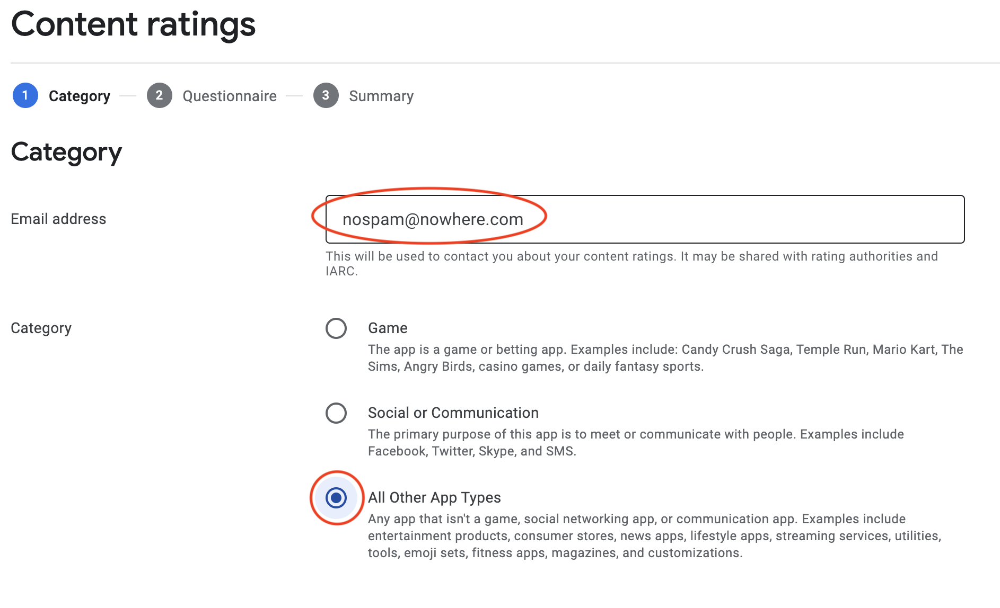

17 Build & Release an Android App¶
So you’ve finished building your app and you’re ready to let the world try it out. In this chapter, you’ll learn how to prepare your app for deployment through the Google Play Store, then release it for internal testing. In the next chapter, you’ll do the same for Apple’s App Store.
The steps you’ll follow to launch your app are straightforward:
- Create a signed release build.
- Prepare the Play Store for upload.
- Upload the build.
- Notify testers that the build is ready.
To complete this chapter, you’ll need a Google Play developer account. If you want to test the download of the release from the Google Play store you’ll also need a physical Android device.
Set up for release¶
Before you can upload a build for distribution, you need to build it with a release configuration. When you create a new Flutter project, you automatically create a debug build configuration. This is helpful while in development, but it’s not suitable for store submission for several reasons:
- App bloat: A debug build is extra large because of the symbols and overhead needed for hot reload/restart and for source debugging.
- Resource keys: It’s typical to point your debug app at a sandbox environment for services and analytics so you don’t pollute production data or violate user privacy.
- Unsigned: Debug builds aren’t signed yet. To upload to the store, you need to sign the app to verify you are the one who built it.
- Google says so: The Play Store won’t allow you to upload a debuggable app.
The app’s configuration spreads across several files. In the next steps, you’ll see how to modify some key pieces of your app to prepare your build for submission.
If you’re following along with your app from the previous chapters, open it and keep using it with this chapter. If not, just locate the projects folder for this chapter, open the starter project in Android Studio and remember to get dependencies.
Note: If you use the starter app, don’t forget to add your
apiKeyandapiIdin network/recipe_service.dart.
Preparing the manifest¶
Debug builds get broad permissions, but apps released through reputable stores need to declare which aspects of the user’s hardware or systems they need to access. The Android Manifest file is where you declare permissions.
Open android/app/src/main/AndroidManifest.xml. This file describes the app to the Android OS.
Add the following permission beneath the closing </application> tag. Look for the comment that reads <!-- add permissions here --> and add the following code beneath it:
<uses-permission android:name="android.permission.INTERNET" />
With this line, you tell Android that your app needs access to the internet to run. The Flutter template manifest does not include any permissions.
Note: If your next app requires additional permissions, such as access to the camera or location information, add them here.
Updating build.gradle¶
build.gradle is where you describe different build configurations. You’ll change it next. When you set up the app, you used the default debug configuration. Now, you’ll add a release configuration to produce a bundle you can upload to the Play Store.
Open android/app/build.gradle.
Under android {, you’ll see a definition for defaultConfig. This describes the app ID, versioning information and SDK version.
When assigning applicationId, you usually use your name or your company’s name.
applicationId "com.raywenderlich.recipe_finder"
This book uses com.raywenderlich.recipe_finder, which means you need to use a different name when you submit to the stores. To avoid errors because the app already exists in the Play Store, use something unique to you or your business name when you upload your app. Be sure to use lowercase letters and don’t use spaces or special characters.
Change applicationId to something unique. For example you could add letters to the end of the text inside the quotes. Be creative :]
Your next step is to create a signing key to make your app secure enough to be in the Play Store.
Creating a signing key¶
Before you can distribute the app, you need to sign it. This ensures that all future versions come from the same developer.
To sign the app, you first need to make a signing key by creating a keystore, which is a secure repository of certificates and private keys.
During the next step, you’ll see a prompt to enter a password. There are some key things to know:
- Use any six-character password you like, but be sure to remember it. You’ll need it whenever you access the keystore, which you need to do every time you upload a new version of the app.
- In addition to a password, you need to provide information about yourself and your organization. This is part of the certificate, so don’t enter anything you don’t want someone else to see.
- Once you’ve entered and confirmed that information, the tool will create the .jks file and save it in the directory that ran the command.
Open a terminal window and navigate to the root project directory.
Note: If you started this chapter with the starter project, then the root project directory is the starter folder.
Run the following command:
keytool -genkey -v -keystore recipes.jks -keyalg RSA -keysize 2048 -validity 10000 -alias recipes
keytool is a Java command run from Terminal that generates a keystore. You save it in the file, recipes.jks.
The keystore contains one key with the specified -alias recipes. You’ll use this key later to sign the bundle that you’ll upload to the Play Store.
Note: It’s important to keep the keystore secure and out of any public repositories. Adding it to .gitignore will help protect your file. If someone gets access to the key, they can distribute potentially malicious apps on your behalf, causing all sorts of mayhem.
If you wish to add the files to the .gitignore file, it is located at the project root level. Open the file and add the following at the bottom of the
# Android relatedsection:**/android/key.>properties ./recipes.jks
Accessing the signing key¶
Now that you’ve created a key, you need to supply the build system with the information necessary to access it. To do that, you’ll create a separate file to store the password information.
Note: It’s important to keep this file a secret and not to check it into a public repository, just like the keystore file. If a malicious actor has this file and your keystore, they can easily impersonate you.
In the android folder, create a new file: key.properties.
Set its contents to:
storePassword={YOUR PASSWORD}
keyPassword={YOUR PASSWORD}
keyAlias=recipes
storeFile=../../recipes.jks
storePassword and keyPassword should be the same password you supplied the keytoolcommand, without any punctuation.
keyAlias is the same as the -alias listed at the end of the keytool command.
storeFile is the path of the keystore you created. It’s relative to android/app, so be sure to change the path, if necessary.
You need these values to unlock the key in the keystore and sign the app. In the next step, you’ll read from the file during the build process.
Referencing the signing key¶
You now have a key and its password, but signing doesn’t happen automatically. During the build, you need to open the keystore and sign the app bundle. To do this, you need to modify the build… and when you think about modifying the build process, you should think about build.gradle.
Open android/app/build.gradle.
Before the android { section, locate // Add keystore properties here and add the following:
def keystoreProperties = new Properties()
def keystorePropertiesFile = rootProject.file('key.properties')
if (keystorePropertiesFile.exists()) {
keystoreProperties.load(new FileInputStream(keystorePropertiesFile))
}
Here, you define a new Properties that reads key.properties and loads the content into keystoreProperties. At the top of the file, you’ll see something similar that loads the Flutter properties from local.properties.
Next, inside the android section, locate // add signing release config here just after the defaultConfig block and add:
signingConfigs {
release {
keyAlias keystoreProperties['keyAlias']
keyPassword keystoreProperties['keyPassword']
storeFile keystoreProperties['storeFile'] ? file(keystoreProperties['storeFile']) : null
storePassword keystoreProperties['storePassword']
}
}
This defines a signing configuration, then directly maps the values loaded from the properties file to the release configuration.
Finally, replace the existing buildTypes block with:
buildTypes {
release {
signingConfig signingConfigs.release
}
}
This defines the release signingConfig, which is a specific Android build construct, created using the previously declared release signing configuration. You’ll use this when you create a release build.
Now, you’ve created a release configuration and set it up. The next step is to build the app for release.
Build an app bundle¶
With build.gradle in place, you can leave the final steps to create a signed Android App Bundle up to the Flutter build system. The bundle will contain everything you need to upload your app to the Play store.
Open a terminal window, navigate to the project directory and run:
flutter build appbundle
This will build an Android App Bundle (AAB) for the project. It may take several minutes to complete. When it’s done, the command output will tell you where to find the .aab file.
Note: If you receive an error message stating the keystore file was not found, make sure the path you have in key.properties for the
storeFile=line has the correct path to the generated recipes.jks.
The bundle is just a .zip file containing the compiled code, assets and metadata. You’ll send this to Google in the next section.
AAB versus APK¶
If you’ve been working with Android for a while, you might be expecting to create an APK file. When you do a debug build from Android studio, you get an APK file.
You can distribute an Android app as an APK or an AAB. App bundles are preferred by the Play Store, but you can use APKs to distribute in other stores or for sideloading to a device.
Note: Sideloading means installing an app on an Android device without using the official Google Play store. After configuring your device to allow running apps from unknown sources, you can install apps that are typically distributed as APK files.
If you want to create an APK release, use the following command:
flutter build apk --split-per-abi
This creates release build APKs. The --split-per-abi flag makes separate APKs for each supported target, such as x86, arm64 and so on. This reduces the file size for the output. A “fat” APK, which contains support for all targets, could be substantial in size. To make a fat APK rather than a split APK, just omit that flag.
Uploading to the Google Play Store¶
Your next step to getting your app out in the wide world is to upload it to the Google Play Store. You’ll need a Google Play Developer account to do that.
Open https://play.google.com/console/. If you see a prompt to sign up, follow the onscreen instructions to create a developer account. There is a nominal fee to join the Google Developer Program. If you don’t want to sign up, you can continue to distribute APK files via sideloading.
This book won’t cover the specific steps for creating an account, as those instructions change faster than this book. Just follow along with Google’s guidance until you are at the Google Play Console.

Creating a new app¶
Once you’re in the Play Console, the next step is to create an app. This gives you a place to upload your build. The big Create app button will do the trick — click it to get started. The location of the button depends on whether this is your first app.
Next, you’ll see prompts for some basic information about the app. You’ll also need to agree to the Developer Program Policies.
If you’re satisfied with accepting the declarations, click Create app once again.
Note that creating an app just creates a record in the Play Store. This lets you deal with pre-release activities, uploading builds and filling out store information. It doesn’t publish anything to the store or make anything public yet. You have a lot more information to add before you can publish the app.
Providing assets and a description¶
Your next step before publishing is to upload app assets, such as icons and screenshots, and provide a description for the app. You’ll do this in the Main store listing tab.
On the left, expand Store presence under the Grow section and select Main store listing.
Here, you’ll enter the customer-facing information about your app, which is required for release. The page has two sections: App Details and Graphics.
In the App Details section, enter a Short description and a Full description.
For example, a short description for this app might be:
This is an app to find recipes on the web.
Here’s an example for the full description:
With Recipe Finder, the world’s premier recipe search app, you’ll find all sorts of interesting things to cook. Bookmark your favorite ones to put together a shopping list.
The Graphics section lets you upload special art and screenshots. You’ll find sample versions of these in assets\store graphics at the top of this chapter’s materials.
For the App icon, upload app_icon.png. This is a large, 512×512px version of the launcher icon.
The Feature graphic is the image you use to promote your app in the Play Store. Upload feature_graphic.png for this asset. It’s a 1024×500px stylized image that promotes the app branding.
Next, you need to add the screenshots. The store asks for phone, 7-inch tablet and 10-inch tablet image sizes. Fortunately, you don’t have to upload screenshots for every possible screen size, just a representative.
For the Phone screenshots, upload phone1.png, phone2.png and phone3.png. These all come from screenshots taken on the simulator.
Even though Recipe Finder isn’t designed for a tablet, it will run on one. It’s good practice to include screenshots for these cases, as well.
For 7-inch tablet screenshots upload 7in.png.

For 10-inch tablet screenshots upload 10in.png.
For this chapter, you won’t upload a Video because that requires setting up a YouTube account. However, a video that shows off your app’s features is a good idea for your production apps.
Click Save to save the images and details you’ve entered so far.
Now, you’ve defined enough of a presence to make an impression.
Entering the rest of the information¶
However, you still haven’t added enough information for the Play Store to allow you to distribute your app. Because you can promote an uploaded build for sale in the store, the Play Console wants you to fill out a lot of information first.
Click the Dashboard button, which is the top item in the left navigation bar in the console, and find the Set up your app section. This shows a checklist of all the items you need to fill out before you can distribute your app.
The steps you performed earlier completed the Set up your store listing goal, so it’s already checked.
Click each of those items to fill out the required information. If you get lost in the process, go back to the Dashboard and find the Set up your app section again.
Because this is a simple recipe app without a lot of controversial content — other than what counts as a “sandwich” — the answers are straightforward. You also have time before your app goes live in the Play Store to modify any of your choices.
The following are sample settings to get you started.
Be sure to click Save after updating each page, then navigate back to the Dashboard to choose the next step.
Set privacy policy¶
For privacy policy you must include a link to where you are hosting your app’s privacy policy. This is mandatory for apps targeting children under 13. But it’s a good idea for all apps, as customers expect it these days.
App access¶
For App access, select that all functionality is available since there are no restrictions.
Ads¶
For Ads, indicate that the app doesn’t contain ads.
Content rating¶
To receive a content rating, you’ll have to answer a questionnaire. Click Start questionnaire.
The questionnaire has several steps. The first is specifying the Category. Enter your email address, select the All Other App Types category and click Next.

You need to answer several questions regarding your app’s content. Be sure to read each before making your selection. Your app just contains recipes without any functionality to even buy the ingredients, so you can select No for all the content questions. When you’re finished, click Save.
After you’ve saved your choices, click Save and then click Next to review the Summary page.
If everything looks good, click Submit. You’ll then see the Content ratings page.
Click the Back arrow at the top to return to the Dashboard and continue with Target audience.
Target audience¶
This app is not for children, so simply select 18 and up. That way, there’s no problem if a user looks up a saucy dish, like a bolognese.
The next question asks about your Store presence. Choose your preferred option and click Next.
The screen will show you a summary. Note the differences between choosing Yes and No.
Click Save and then the Back arrow again to go back to the Dashboard and get ready to set details for the News section.
News¶
This is not a news app.
COVID-19 contact tracing and status apps¶
This is not a COVID-19 contact tracing or status app.
Data safety¶
The data safety questionnaire collects information about how the app collects user data. Fortunately, this app does not, simplifying your answers.
Click Next on the Overview screen.
On the Data collection form, select No and click Next.
On the Store listing preview page, click Submit to continue with the app setup process.

App category¶
Return to the Dashboard and click Select an app category and provide contact details.
For the app category, select Books & Reference because this is a reference app. For the contact details, you need some real business contact info to publish to the store. For testing, however, it’s OK to fill out nonsense.
Click Save at the bottom right.
App pricing and merchant info¶
If your Google Play Store account is new and you haven’t set up your financial information yet, you need to let Google know where to send money. In this case, though, it’s not a big deal because this is a free app.
To change the price, find the search field at the top of the Dashboard page. Enter pricing and click App Pricing.
In this case, you’ll publish a free app, which is the default value.
Now, you’re finally ready to set up a release and upload a build.
Uploading a build¶
The next step in your app’s journey is to upload a build for testing. The Play Store provides different levels of testing:
- Internal testing: Intended for testing within your organization or with a small group of friends or customers, it’s limited to 100 people. You’ll generally use this for releases during the development cycle.
- Closed testing: Allows you to send builds to an invite-only list. Use this for alpha or beta releases, experiments and gathering feedback from a wider set of customers or reviewers.
- Open testing: A public test that anyone can join. Use this to gather feedback on a polished release.
In any of these tracks, the steps to upload a build are similar. This chapter focuses on internal testing.
Go to the Release section in the left menu. Expand Testing ▸ Internal testing and click Create new release.
If prompted, read the Terms and Conditions. If you don’t object to them, accept them.
To use an Android App Bundle, which Google prefers, you must allow Google Play to create your app signing. For more information, click Learn more. When you’re done, scroll down to App bundles.
When you ran flutter build, it placed app-release.aab in your current project’s folder hierarchy. The location isn’t part of your Flutter project and it isn’t visible in your IDE.
By default, the directory is: build/app/outputs/bundle/release/. Open Finder or Windows Explorer and navigate to this release folder.
Drag the app bundle file to the box for dropping or uploading a file, in the middle of the Releasespage.
After the upload has completed, all that’s left to do is create a Release name and Release notes.
The release name defaults to the version number, but you can rename it to something that will be helpful if you need to refer to the version later. For example, First Testing Release.
Use the release notes to notify the users about what’s changed or if you want them to look for particular issues. You can provide this message in multiple languages.
For example:
<en-US>
This release is just to demonstrate uploading and sending out a build.
</en-US>
When you’re done, click Save. This saves the release information.
To distribute it, next click Review release.
Distribution¶
On the next screen, if there are any errors listed under Errors, warnings and messages, you’ll have to resolve them before you can proceed. It’s OK to roll out with warnings, such as a lack of debug symbols.
Once you’ve resolved all the issues, click Start rollout to Internal testing.
You’ll get one more confirmation dialog. Click Rollout.
When the release says Available to internal testers, your app is ready for testing. Congratulations!
Note: It will take some time before the app becomes available, from minutes to possibly a few days. Stay patient.
Click the Testers tab, then Create email list to create a new list of testers.
Give the list a name and add the Google account email that you use for the Play Store on your phone.
There are a few ways to get the app on your phone. The easiest is to use the web link, which you can find under How testers join your test.
Click Copy link and send it to yourself on an Android device. Be sure to click Save changes.
Installing the app¶
Using the web browser on your Android device, navigate to that link and you’ll see the invitation to join the test.
Tapping ACCEPT INVITE will give you a link to the Play Store to download the app. Once you’re in the Play Store, just tap Install.
After the app loads, you’re ready to go.
Congratulations, you just built a Flutter app on your local machine, uploaded it to Google Play and downloaded it to your device! Take a bow, this is a real accomplishment.
Key points¶
- Release builds need a signed release configuration.
- To upload to the Google Play Store, you’ll need to list all necessary permissions.
- To test an app, go to the Google Play Console, create the app with store metadata, create a release, upload the build and invite testers.
Where to go from here?¶
For the most part, you don’t need the Flutter tools to prepare the app bundle for release. It’s all Android-specific work. To learn more about how Android Studio can help prepare and sign release builds and how to use the Google Play Console, check out our Android Apprentice book: https://www.raywenderlich.com/books/android-apprentice. This covers the Google Play Console more in-depth.
In particular, once you’ve done enough internal testing of your app, you can promote the release for closed testing. This means that your app goes through App Review and is available in the Play Store, but it’s unlisted. This lets you share it with even more testers.
After that, you can promote that release for open testing, which is a public beta that anyone can join, or send it out as an official production release.
In the next chapter you’ll release Recipe Finder on Apple’s App Store. Get ready!